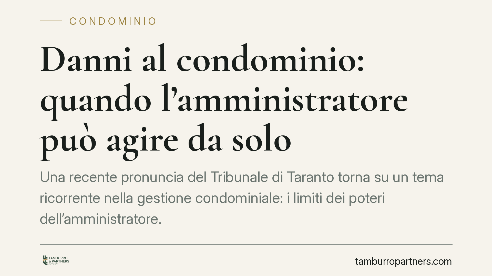

Danni al condominio: quando l'amministratore può agire da solo
Una recente pronuncia del Tribunale di Taranto torna su un tema ricorrente nella gestione condominiale: i limiti dei poteri dell'amministratore. Quando l'edificio è a rischio, l'amministratore può agire in giudizio senza attendere il via libera dell'assemblea. Chiariamo cosa rientra negli atti conservativi e cosa invece richiede una delibera, con le conseguenze pratiche per condomini e professionisti.

Il caso
Il Tribunale di Taranto, Sezione I, è intervenuto su una questione classica del diritto condominiale: l'amministratore che avvia una causa per danni all'edificio senza una preventiva autorizzazione dell'assemblea. La controversia riguardava un'azione volta a tutelare la sicurezza e l'integrità dello stabile, promossa dall'amministratore in autonomia.
Il giudice ha confermato un principio consolidato: per gli atti conservativi l'amministratore agisce legittimamente anche senza delibera assembleare. La preventiva autorizzazione resta invece necessaria quando l'azione esorbita dai poteri di ordinaria amministrazione.
Inquadramento normativo
Il perimetro è tracciato dagli articoli 1130 e 1131 del Codice civile.
L'art. 1130, n. 4, c.c. attribuisce all'amministratore il potere di «compiere gli atti conservativi relativi alle parti comuni dell'edificio». Si tratta di un potere autonomo: non presuppone un mandato specifico dell'assemblea, perché la legge lo riconosce direttamente in capo all'amministratore in ragione del suo ufficio.
L'art. 1131 c.c. completa il quadro sul piano processuale. Il primo comma gli riconosce la rappresentanza dei condomini nei limiti delle attribuzioni stabilite dall'art. 1130 o dei maggiori poteri conferiti dal regolamento o dall'assemblea. Il secondo comma lo legittima ad agire in giudizio sia contro i condomini sia contro i terzi.
Qui sta il punto. Per gli atti conservativi — quelli diretti a impedire un pregiudizio imminente alle parti comuni — l'amministratore agisce di diritto. Per le altre iniziative giudiziarie che fuoriescono dall'ordinaria amministrazione, come un'azione di merito dagli esiti e dai costi significativi, serve la delibera.
Nel caso di danni all'edificio connessi a vizi costruttivi, viene inoltre in rilievo l'art. 1669 c.c., che disciplina la responsabilità dell'appaltatore per gravi difetti dell'opera. La legittimazione dell'amministratore ad attivare questa tutela è stata oggetto di numerose pronunce: la qualificazione dell'azione come atto conservativo o come iniziativa eccedente l'ordinaria amministrazione incide direttamente sulla necessità del passaggio assembleare.
Cosa cambia in concreto
La distinzione non è teorica. Ne derivano conseguenze operative precise.
Se l'edificio presenta un pericolo attuale — infiltrazioni che compromettono le strutture, distacchi di intonaco, dissesti — l'amministratore non deve attendere la convocazione dell'assemblea per tutelare il bene comune. Un ritardo potrebbe aggravare il danno e, in ipotesi, esporlo a responsabilità per omissione.
Sul fronte opposto, l'amministratore che avvia una causa complessa qualificabile come straordinaria senza autorizzazione rischia di vedere l'azione dichiarata inammissibile o di dover ottenere una ratifica successiva dell'assemblea. La ratifica sana il difetto originario, ma espone il condominio al rischio di una pronuncia sfavorevole sulle spese se nel frattempo emergono vizi.
Per i condomini il messaggio è duplice. Da un lato, la tutela dell'edificio non si ferma per l'assenza di una delibera. Dall'altro, conviene monitorare le iniziative dell'amministratore: non ogni causa rientra automaticamente negli atti conservativi, e la qualificazione va verificata caso per caso.
Cosa fare in concreto
- Verificate la natura dell'azione prima di procedere: chiedetevi se si tratta di tutelare l'integrità delle parti comuni da un pregiudizio o di un'iniziativa che eccede l'ordinaria amministrazione.
- Documentate l'urgenza quando l'amministratore agisce senza delibera: relazioni tecniche, segnalazioni e fotografie datate rendono difendibile la qualificazione come atto conservativo.
- Convocate comunque l'assemblea nel più breve tempo possibile per informare i condomini e, dove opportuno, ottenere una ratifica o un mandato più ampio.
- Controllate il regolamento condominiale, che può ampliare o circoscrivere i poteri dell'amministratore rispetto al modello legale.
- Rivolgetevi a un legale in via preventiva nei casi dubbi: anticipare la valutazione sulla legittimazione evita vizi processuali e contestazioni sulle spese.
La linea di confine tra atto conservativo e azione straordinaria resta il vero nodo pratico. La pronuncia tarantina conferma un orientamento favorevole alla tutela immediata del bene comune, ma la prudenza nella qualificazione dell'azione rimane la miglior garanzia per evitare contenziosi interni ed eccezioni di inammissibilità.
---
Contributo informativo a cura di Tamburro & Partners - Avv. Giuseppe Tamburro. Non costituisce parere legale.
Ogni condominio ha una storia a sé.
Se gestisci un'amministrazione e vuoi un confronto su una specifica questione condominiale, scrivi allo studio. Ti rispondiamo entro un giorno lavorativo.